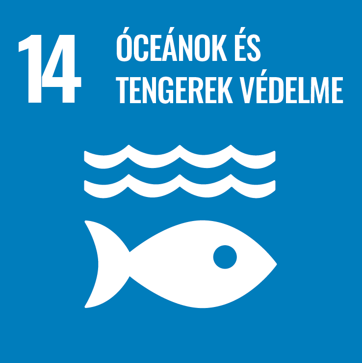
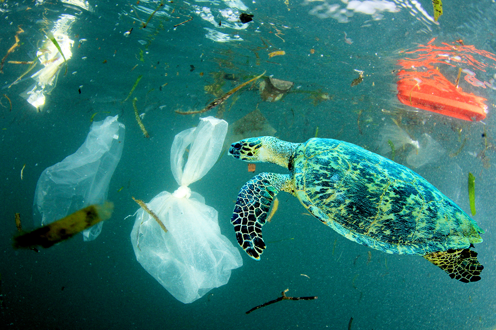

ÓCEÁNOK ÉS TENGEREK VÉDELME
"Megőrizni és fenntarthatóan használni az óceánokat, a tengereket és a tengeri erőforrásokat a fenntartható fejlődés érdekében"

14.1 2025-re megelőzzük, illetve jelentős mértékben csökkentünk minden tengereket érő szennyezést, különösen a szárazföldi tevékenységből eredőket, ideértve a tengeri uszadékot, és a tápanyagterhelést.
14.2 A jelentős károsító hatások elkerülése érdekében 2020-ra fenntartható módon kezeljük és védjük a tengeri és tengerparti ökoszisztémákat, ide értve ellenállásra és alkalmazkodásra való képességük megerősítését, illetve intézkedünk helyreállításuk érdekében, hogy az óceánok egészségesek és termékenyek legyenek.
14.3 A lehető legjobban visszafogjuk az óceán savasodását és kezeljük annak hatásait, többek között fokozott tudományos együttműködéssel, minden szinten.
14.4 2020-ra hatásosan szabályozzuk a tengeri halászatot, véget vetünk a túlhalászásnak, a jogellenes, szabályozatlan, be nem jelentett és káros halászatnak, és tudományosan megalapozott kezelési terveket hajtunk végre, hogy a lehető legrövidebb idő alatt helyreállítsuk a halállományokat, legalább olyan szinten, amely a biológiai tulajdonságaiknak megfelelően a legnagyobb fenntartható szaporulatot hozza.
14.5 2020-ra védelem alá helyezzük és megóvjuk a parti és tengeri területek legalább 10%-át a nemzetközi és nemzeti szabályozással összhangban, a tudományos kutatások legjobb elérhető eredményeire támaszkodva.

Források:
- https://unis.unvienna.org/unis/hu/topics/sustainable_development_goals.html
- https://www.google.com/search?sca_esv=7fcd6f03a496d01d&rlz=1C1GCEU_huHU1094HU1094&q=FENNTARTHAT%C3%93+FEJL%C5%90D%C3%89SI+C%C3%89LOK+%C3%B3ce%C3%A1nok&tbm=isch&source=lnms&sa=X&ved=2ahUKEwib1OCdyM2EAxX2gv0HHbBPB3UQ0pQJegQICxAB&biw=1920&bih=953#imgrc=wrXrep3bosQX0M
- https://www.google.com/search?q=ocean&tbm=isch&ved=2ahUKEwj3w-yoys2EAxWtkv0HHXFXBVIQ2-cCegQIABAA&oq=ocean&gs_lp=EgNpbWciBW9jZWFuMggQABiABBixAzIFEAAYgAQyBRAAGIAEMgUQABiABDIFEAAYgAQyBRAAGIAEMgUQABiABDIFEAAYgAQyBRAAGIAEMgUQABiABEiEGlDkCFjUF3ABeACQAQCYAZoKoAHIEaoBCTIuMi4yLjctMbgBA8gBAPgBAYoCC2d3cy13aXotaW1niAYB&sclient=img&ei=8OneZfeLA62l9u8P8a6VkAU&bih=953&biw=1920&rlz=1C1GCEU_huHU1094HU1094#imgrc=XvtNE3lifwgUgM&imgdii=PwGM2OY6ugju6M